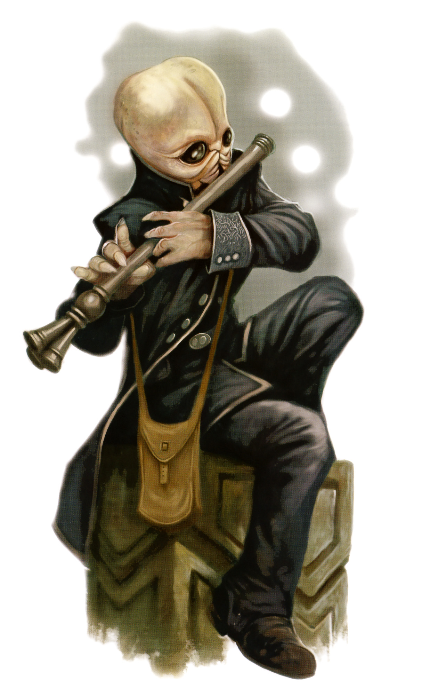

<!DOCTYPE html>
<html>

<head>
  <title>Bith</title>

  <meta charset="utf-8">
  <meta name="viewport" content="width=device-width, initial-scale=1, shrink-to-fit=no">

  <link rel="stylesheet" href="https://stackpath.bootstrapcdn.com/bootstrap/4.1.3/css/bootstrap.min.css" integrity="sha384-MCw98/SFnGE8fJT3GXwEOngsV7Zt27NXFoaoApmYm81iuXoPkFOJwJ8ERdknLPMO"
    crossorigin="anonymous">
  <link rel="stylesheet" type="text/css" href="style.css">
</head>

<body>

  <nav class="navbar navbar-expand-lg navbar-dark bg-dark">
    <a class="navbar-brand" href="#">Star Wars Tabletop Codex</a>
    <button class="navbar-toggler" type="button" data-toggle="collapse" data-target="#navbarSupportedContent" aria-controls="navbarSupportedContent"
      aria-expanded="false" aria-label="Toggle navigation">
      <span class="navbar-toggler-icon"></span>
    </button>

    <div class="collapse navbar-collapse" id="navbarSupportedContent">
      <ul class="navbar-nav mr-auto">
        <li class="nav-item">
          <a class="nav-link" href="index.html">Home</a>
        </li>
        <li class="nav-item active" id="nav_active">
          <a class="nav-link" href="species_index.html">Species <span class="sr-only">(current)</span></a>
        </li>
        <li class="nav-item">
          <a class="nav-link" href="equipment_index.html">Equipment</a>
        </li>
        <li class="nav-item">
          <a class="nav-link" href="class_index.html">Classes</a>
        </li>
      </ul>
    </div>
  </nav>


  <br>
  <div class="Container" id="main_box">

    <a href="species_index.html"><button type="button" class="btn btn-outline-dark" id="back_button">&#9668; Back</button></a>

    <h1>Bith</h1>
    
    <br>

    <div class="container col-8">

      <div class="card">
        <div class="card-header" id="headingOne">
          <h5 class="mb-0">
            <button class="btn btn-link btn-block" type="button" data-toggle="collapse" data-target="#collapseZero" aria-expanded="false"
              aria-controls="collapseZero" style="color: white; text-decoration: none; text-align: left">
              Stats
            </button>
          </h5>
        </div>
        <div id="collapseZero" class="collapse" aria-labelledby="headingZero">
          <div class="card-body">
            <div class="row justify-content-md-center">
              <div class="col col-lg-2 align" align="center">
                <strong>Bra</strong>
              </div>
              <div class="col col-lg-2" align="center">
                <strong>Agi</strong>
              </div>
              <div class="col col-lg-2" align="center">
                <strong>Int</strong>
              </div>
              <div class="col col-lg-2" align="center">
                <strong>Cun</strong>
              </div>
              <div class="col col-lg-2" align="center">
                <strong>Will</strong>
              </div>
              <div class="col col-lg-2" align="center">
                <strong>Pre</strong>
              </div>
            </div>
            <div class="row justify-content-md-center">
              <div class="col col-lg-2" align="center">
                1
              </div>
              <div class="col col-lg-2" align="center">
                2
              </div>
              <div class="col col-lg-2" align="center">
                2
              </div>
              <div class="col col-lg-2" align="center">
                2
              </div>
              <div class="col col-lg-2" align="center">
                2
              </div>
              <div class="col col-lg-2" align="center">
                3
              </div>
            </div>
            <br>
            <div class="row justify-content-md-center">
              <div class="col col-lg-6">
                <b>Wound Threshold: </b>10 + Brawn
              </div>
            </div>
            <div class="row justify-content-md-center">
              <div class="col col-lg-6">
                <b>Strain Threshold: </b>10 + Willpower
              </div>
            </div>
            <div class="row justify-content-md-center">
              <div class="col col-lg-6">
                <b>Starting Experience: </b>100 XP
              </div>
            </div>
            <div class="row justify-content-md-center">
              <div class="col col-lg-6">
                <p><b>Special Abilities: </b>Bith begin the game with one rank in <u>Perception</u>. They still may not train
                  Perception above rank 2 during character creation.</p>
              </div>
            </div>
            <div class="row justify-content-md-center">
              <div class="col col-lg-6">
                <p><b>Sensitive Hearing: </b>Bith add <span style="color:lightblue">&#9632</span> whenever they make a hearing-based
                  Perception check. When Bith suffer strain due to loud noises (such as from sonic weapons), they suffer
                  twice the normal amount of strain. Wearing ear protection negates both effects of this ability.</p>
              </div>
            </div>
          </div>
        </div>
      </div>

    </div>
    <br>
    <p>Centuries ago, the <b>Bith</b> homeworld, Clak’dor VII, was a strong member of the Galactic Senate. Its citizens traveled
      widely, debated science and philosophy, and helped their world and the galaxy prosper intellectually and economically.</p>
    <p>Clak’dor VII was divided into city-states. Though chaotic, this method of governance functioned smoothly until the
      Nozho-Weogar War. The civil war between these city-states was short-lived but devastating. Both launched chemical,
      biological, and mutagenic weapons that shattered the ecosystem and eventually claimed nearly all of the planetary population.
      Offworld Bith tried to return, but the Bith governments set up a planetwide quarantine. Unafflicted Bith scattered
      across the Outer Rim to work and to find aid for their homeworld.</p>
    <p>In the three centuries since, the Bith have suffered the effects of losing a homeworld without actually losing it.
      The quarantine convinced outsiders that the Bith carried a plague. Since all of the economic support went to repairing
      their planet, Bith colonies and outposts dissolved or integrated with other communities. Clak’dor VII virtually disappeared
      from galactic life. Although the planet-bound Bith have stabilized their culture and governments, the planet has remained
      toxic. A cultural split endures between those on Clak’dor VII and the other Bith, but all use the war as an object
      lesson on the futility of violence.</p>
    <p>Disillusionment with the Republic led the Bith to side with the Separatists, although not in a military capacity.
      Not only did they object to the corruption of the Republic (which mirrored their own before their civil war), but the
      Confederacy of Independent Systems promised much-needed supplies and aid. With the collapse of the Republic, the Bith
      now face the wrath of the Empire, which uses Separatist worlds as scapegoats for various propaganda purposes.</p>
    <p>Bith have a strong history of adaptation. They survived the loss and slow restoration of their home￾world, and they
      continue to adjust to life under Imperial rule. As the Galactic Civil War grows, the Bith not only must adapt to the
      idea of widespread warfare, but must decide which side to support.</p>
    <br>
    <div class="accordion" id="accordionExample">

      <div class="card">
        <div class="card-header" id="headingOne">
          <h5 class="mb-0">
            <button class="btn btn-link btn-block" type="button" data-toggle="collapse" data-target="#collapseOne" aria-expanded="false"
              aria-controls="collapseOne" style="color: white; text-decoration: none; text-align: left">
              Physiology
            </button>
          </h5>
        </div>
        <div id="collapseOne" class="collapse" aria-labelledby="headingOne">
          <div class="card-body">
            <p>With their large eyes, high cranial bone, and lack of a prominent nasal organ, the Bith are one of the more
              recognizable species. Their large black pupils allow for a wide range of wavelengths, giving them exceptional
              eyesight. They have olfactory facial folds, but don’t use them to breathe; instead, they absorb air through
              their skin. Despite the lack of any obvious aural organs, Bith have sensitive hearing. While tales of Bith
              heads exploding due to sonic attacks are a popular fiction, they do find loud noises very painful.</p>
          </div>
        </div>
      </div>

      <div class="card">
        <div class="card-header" id="headingTwo">
          <h5 class="mb-0">
            <button class="btn btn-link btn-block" type="button" data-toggle="collapse" data-target="#collapseTwo" aria-expanded="false"
              aria-controls="collapseTwo" style="color: white; text-decoration: none; text-align: left">
              Society
            </button>
          </h5>
        </div>
        <div id="collapseTwo" class="collapse" aria-labelledby="headingTwo">
          <div class="card-body">
            <p>Bith pacifism arises less out of cultural tradition than historical exhaustion. After the terrible civil war
              left their homeworld devastated, pacifism became their watchword. They continued to have a voice in the Galactic
              Senate, but centuries of begging for aid to repair their homeworld left them convinced of the Republic’s corruption
              and ineffectualness. Bith are a species both with a home and without.</p>
            <p>The Republic’s war with the Separatists and the subsequent rise of the Rebellion have placed the Bith in an
              uncomfortable position. Centuries without a stable homeworld have taught them that violence solves nothing,
              but the Empire’s persecution threatens to destroy what culture they have managed to preserve.</p>
            <p>Bith also struggle with the legacy of their civil war in the form of offshoot subspecies such as the Y’bith.
              The war’s resultant mutations killed many, but those who survived stabilized their genetic drifts through bioengineering.
              Now a distinct and separate sub-species, the Y’bith are similar in appearance to their genetic cousins, with
              darker and more orange skin and more pronounced facial features and fingers. The Y’bith endure a high level
              of social prejudice from the Bith even though they have the same legal rights.</p>
          </div>
        </div>
      </div>

      <div class="card">
        <div class="card-header" id="headingThree">
          <h5 class="mb-0">
            <button class="btn btn-link btn-block" type="button" data-toggle="collapse" data-target="#collapseThree" aria-expanded="false"
              aria-controls="collapseThree" style="color: white; text-decoration: none; text-align: left">
              Homeworld
            </button>
          </h5>
        </div>
        <div id="collapseThree" class="collapse" aria-labelledby="headingThree">
          <div class="card-body">
            <p><b>Clak’dor VII</b> currently exists in ecological collapse as chemical, radioactive, and biological effects
              from the ancient civil war continue to ravage the environment. The poisoned jungles and swamps are filled with
              rapidly mutating flora and fauna.</p>
            <p>Bith live in domed cities, the majority of which lie nestled in the crags of Clak’dor Vll’s mountain ranges.
              They rely on subterranean engineering and urban architectural advances to burrow deeper and build higher to
              alleviate the cramped conditions. While the planet is safe to visit (if one stays within the domed cities),
              many species, including offworld Bith, find Clak’dor VII harsh and depressing.</p>
          </div>
        </div>
      </div>
      <div class="card">
        <div class="card-header" id="headingFour">
          <h5 class="mb-0">
            <button class="btn btn-link btn-block" type="button" data-toggle="collapse" data-target="#collapseFour" aria-expanded="false"
              aria-controls="collapseFour" style="color: white; text-decoration: none; text-align: left">
              Language
            </button>
          </h5>
        </div>
        <div id="collapseFour" class="collapse" aria-labelledby="headingFour">
          <div class="card-body">
            <p>The Bith language originally had a symbolical and numerical structure, but the modern version of the language
              has been divorced from the numerology. Some still use the old numerical words in codes or communications with
              other Bith. Due to their dependence on offworld trade for necessities, all Bith learn Basic at an early age.</p>
          </div>
        </div>
      </div>
      <div class="card">
        <div class="card-header" id="headingFive">
          <h5 class="mb-0">
            <button class="btn btn-link btn-block" type="button" data-toggle="collapse" data-target="#collapseFive" aria-expanded="false"
              aria-controls="collapseFive" style="color: white; text-decoration: none; text-align: left">
              Life in the Alliance
            </button>
          </h5>
        </div>
        <div id="collapseFive" class="collapse" aria-labelledby="headingFive">
          <div class="card-body">
            <p>After seceding from the Republic to join the Separatists, Clak’dor VII found itself facing a tyrannical Empire
              whose constant persecution forced the Biths to side with the Rebel Alliance. Still, participation in what some
              Bith see as terrorist attacks have made many uncomfortable. The destruction of Alderaan reminds the Bith that
              in any war, there are always unintended casualties.</p>
          </div>
        </div>
      </div>
      <div class="card">
        <div class="card-header" id="headingSix">
          <h5 class="mb-0">
            <button class="btn btn-link btn-block" type="button" data-toggle="collapse" data-target="#collapseSix" aria-expanded="false"
              aria-controls="collapseSix" style="color: white; text-decoration: none; text-align: left">
              Musicians by Necessity
            </button>
          </h5>
        </div>
        <div id="collapseSix" class="collapse" aria-labelledby="headingSix">
          <div class="card-body">
            <p>he Bith reputation for musical skill started as a misperception and exaggeration. After migrating to the Outer
              Rim, many struggled to make a living. Some found themselves in one of the few available occupations: entertainment.
              Bith have the same level of musical skill as any other species, but those who thrived as musicians became known
              for their abilities. Bith in the Alliance have often used this reputation as a cover, as few would think twice
              about performers at a local cantina.</p>
            <p>A number of Bith engineers have also designed specialized musical instruments. Alliance spies have used these
              digital flutes to sneak in recording equipment, relying on their covers as musical pioneers for camouflage.</p>
          </div>
        </div>
      </div>
    </div>

  </div>

  <script src="https://code.jquery.com/jquery-3.3.1.slim.min.js" integrity="sha384-q8i/X+965DzO0rT7abK41JStQIAqVgRVzpbzo5smXKp4YfRvH+8abtTE1Pi6jizo"
    crossorigin="anonymous"></script>
  <script src="https://cdnjs.cloudflare.com/ajax/libs/popper.js/1.14.3/umd/popper.min.js" integrity="sha384-ZMP7rVo3mIykV+2+9J3UJ46jBk0WLaUAdn689aCwoqbBJiSnjAK/l8WvCWPIPm49"
    crossorigin="anonymous"></script>
  <script src="https://stackpath.bootstrapcdn.com/bootstrap/4.1.3/js/bootstrap.min.js" integrity="sha384-ChfqqxuZUCnJSK3+MXmPNIyE6ZbWh2IMqE241rYiqJxyMiZ6OW/JmZQ5stwEULTy"
    crossorigin="anonymous"></script>

  <div class="footer_bar"></div>
</body>

</html>